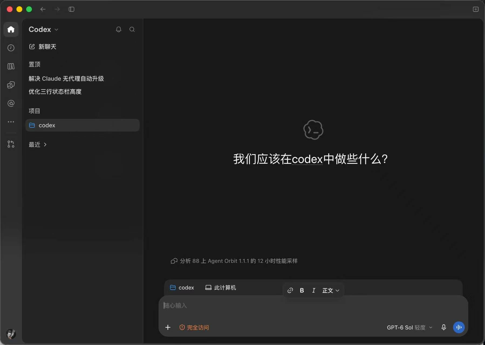
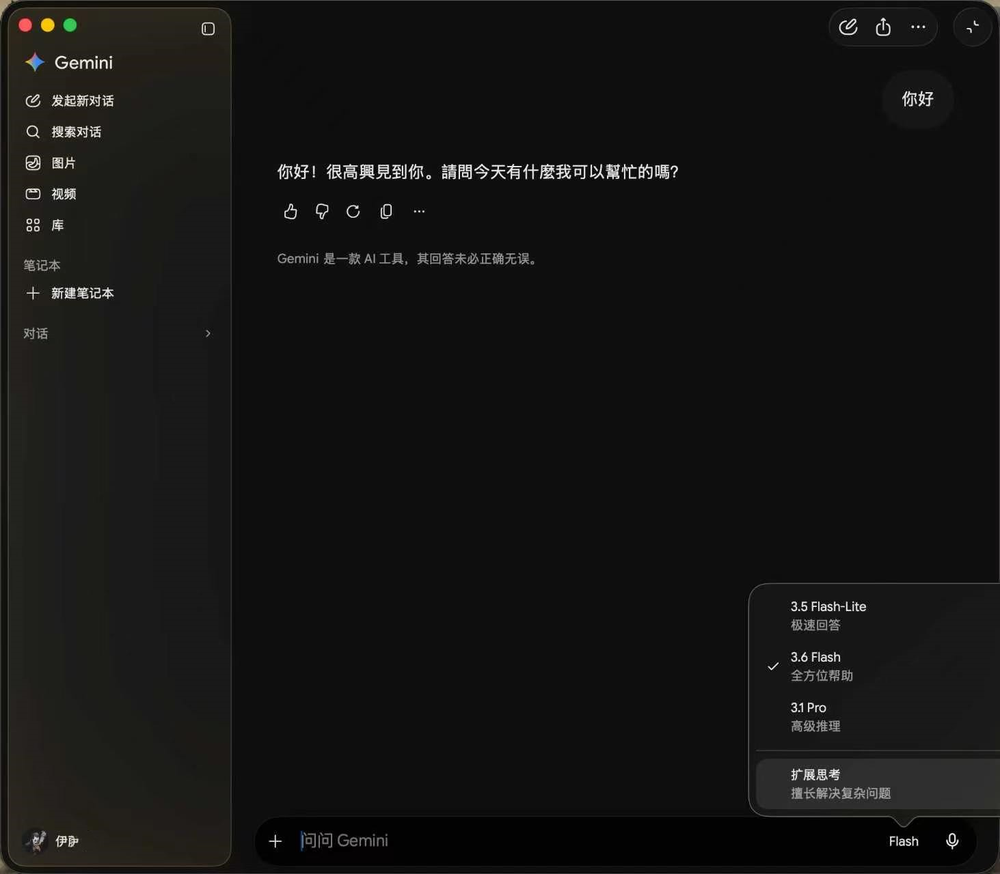
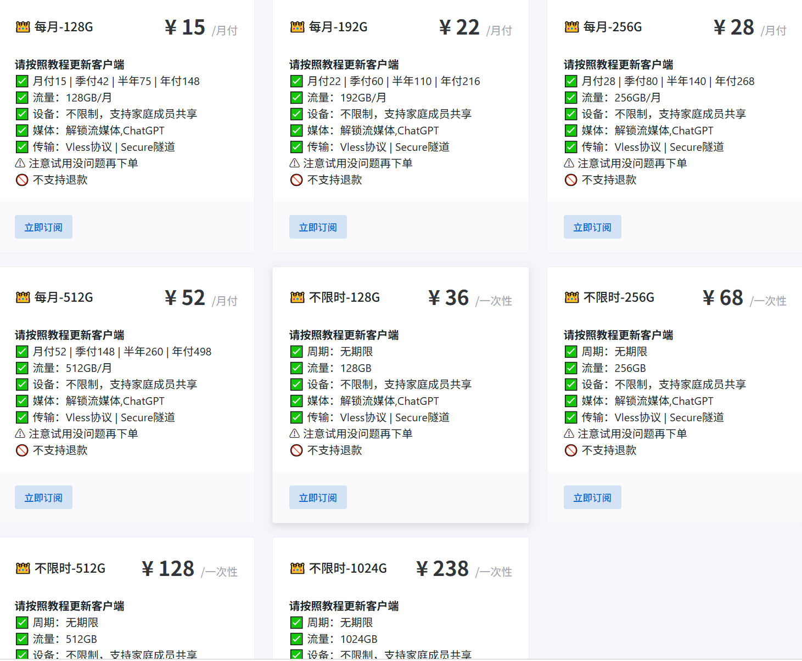
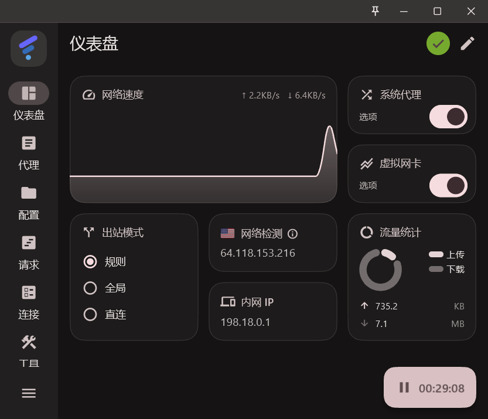
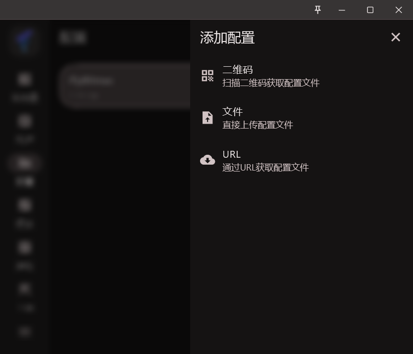
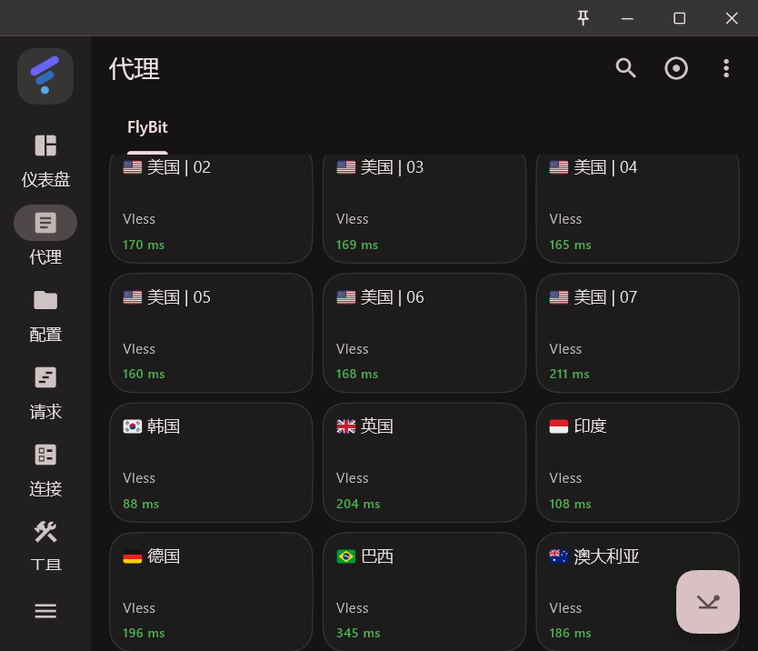

2026 FlyBit 机场评测：15 元起 IEPL 专线，Codex/Gemini 稳定使用四个月，附晚高峰实测和 FlClash 教程
FlyBit 这家机场我已经用了一年，各方面都没问题，一直续到现在。我看场子主要看两点：一是晚高峰稳不稳、速度快不快，二是用 ChatGPT、Gemini 稳不稳。这两点它都做到位了，所以一直没换。写这篇就是把它介绍给有需要的网友。
这篇把我自己用下来的情况整理一下：它家什么底细、节点纯净度检测的数据、ChatGPT 用了四个月的记录、套餐怎么选，最后是 FlClash 的配置教程。截图都是我自己截的，不是机场给的宣传图。
FlyBit 机场概况
老规矩，先看底细。这些是公开页面和后台信息：
| 开业时间 | 2024-07-15，运营两年多了，不是那种开几个月就消失的月抛场 |
|---|---|
| 运营方 | 新加坡华人团队 |
| 线路 | IEPL 专线 + 中转 |
| 协议 | Vless（2026-07 从 SS 全部切换过来），Clash、Shadowrocket、V2rayN、Karing 这些客户端通用订阅都能直接用 |
| 入口 | 电信、联通、移动三网各分 A、B 两组，高峰期哪条出问题可以切另一组，官方 TG 群会实时通报 |
| 出口 | 41 个国家和地区。官方自述油管可跑 50 万+（这个标给他们自己说的，参考下就行） |
| 设备数 | 不限。一个订阅全家够用 |
| 试用 | 1 天 2G 免费。官方公告原话是「需要购买的用户请先试用一整天（尤其晚高峰），能接受再购买」 |
实测部分
买机场就怕两件事：晚高峰卡，和跑 AI 服务被风控。这两个我都测了。
节点 IP 纯净度检测
跑 ChatGPT 这类服务，节点 IP 干不干净比速度重要。2026 年 9 月我用两个查询源（ip-api 加 proxycheck.io）把我常用的美日节点交叉测了一遍，这里放最相关的两个美国节点——我平时跑 AI 就走它们：
| 节点 | 出口 IP | ASN / 归属 | 风险评分 | 我实际用着 |
|---|---|---|---|---|
| 美国 | 04 | 23.142.132.80 | 机房线（IDC Cube 段） | risk 0，无滥用记录 | GPT 可用，四个月没事 |
| 美国 | 03 | 64.118.153.216 | Eons Data Communications 托管商 | risk 0，无滥用记录 | 同样四个月没出过验证 |
检测和实际体验是两回事：proxycheck 对这两个美国节点的风险评分都是 0——无滥用记录，检测体系里最干净的档位；另一家查询源按机房归属标注，口径本来就偏保守。实际体验再补一刀：我的 ChatGPT 走美国 03 / 04 四个月，人机验证一次没弹过，也没觉得降智。跑 AI 走美国线，这两个节点都稳，放心用。
AI 使用记录（ChatGPT / Gemini 实测）
检测报告只是一半，另一半是实际用出来的。我的 ChatGPT 走这两个节点四个月，一直正常；Gemini 也顺带在用，没耽误事：

ChatGPT 桌面端，走美国 03 / 04 节点，正常对话没风控

Gemini 桌面端正常使用
还有个细节，官方群答疑里专门说过：ChatGPT 别挂香港节点。规则模式的话在 FlyBit 节点组里选就行，全局模式去 Global 组里选。这条能省不少试错时间。
晚高峰表现
我家里是电信宽带，重点观察的是晚上 8 点到 11 点这个时段。日常感受是多数日子 4K 随便看、进度条随便拖；晚高峰测下来也没见到明显的掉速。个别日子有个别地区波动，官方公告自己也承认，出了问题 TG 群里通报和修复——说实话，肯把波动写进公告的机场，比那些自称永远满速的让人放心。
速度直接给数字：平时下载东西，我见得最多的是 50-60 MB/s，最高见过 80 多 MB/s——这个速度对千兆宽带基本是覆盖住了。这不是我挑好时候截的成绩，平常就能碰到。测速截图平时没留意存，哪天想起来跑一张补在这。
套餐和价格
| 套餐 | 月付 | 什么人用 |
|---|---|---|
| 128G | ¥15 | 入门档，查资料+日常轻度 |
| 192G | ¥22 | 大多数人的档，日常+流媒体 |
| 256G | ¥28 | GPT 用得多，或有 4K 习惯 |
| 512G | ¥52 | 重度党 |
| 不限时 128G | ¥36 一次 | 买断用完为止，防跑路党从这开始 |
| 不限时 256G / 512G / 1024G | ¥68 / ¥128 / ¥238 | 量大的一次性包 |
下单页可以填九折码 flybit

官网套餐页实拍（2026-10-06 截），月付和一次性买断都在这页
FlClash 配置教程
客户端我推荐 FlClash，开源免费、没有广告，Windows / 安卓 / Mac 三个平台都有版本，订阅链接一粘贴就能用，比市面常用的那几款都好用。下面以 Windows 为例：
- 下载 FlClash：GitHub 的 releases 页面下载 Windows 版。装好打开就是仪表盘：开关、模式、当前出口 IP 都在一屏里看得清。

FlClash 仪表盘，「网络检测」那格显示的就是当前的出口 IP
- 导入订阅：注册登录 FlyBit 后，在仪表盘复制你的订阅链接；回 FlClash 左侧「配置」→「新建」，选 URL 粘贴进去，保存后选中启用。

新建配置有三种，机场订阅选 URL 粘贴
- 选节点：在「代理」页的节点组里挑。跑 ChatGPT 选美国 | 03 / 04，看 Netflix 按你要的地区选。

点一下测延迟，数字小、绿字的先选
- 开系统代理，跑一下：打开 ChatGPT 问一句，再开个油管 4K 试下。用规则模式就行，国内网站自动直连，不用切全局。
- 先白嫖一天再决定买：那 1 天 2G 的试用别浪费，专门用来测你自家宽带的晚高峰，能接受再下单，下单记得填九折码。
不足也说一说
优点在上面概况和实测里都能看出来了，不重复夸。要说不足，就一点，还是正常情况：
- 直通入口偶尔打不开。域名被墙这类事所有机场都一个样，不算这家的问题——官方会维护，新地址马上就有更新，这页上的入口我也会一直换成最新的，打不开就回来看一眼，正常用不耽误事。
要跟一个月几百块的高端场子比配置，它肯定比不了。但在 15 块这个价位上，IEPL 线路，还肯送一天试用让你测，这个组合我确实没有见过第二家。
常见问题
- 现在还能注册吗？地址会不会换？
- 能。入口域名偶尔被墙，换了之后 TG 公告第一时间发新地址，我写的这个是当前可用的。
- 要充值年付吗？
- 我的习惯是任何机场都只充月付，先用一个月再说。预算紧又怕麻烦可以直接买不限时流量包，36 块 128G 用完为止，不怕跑路。
- ChatGPT/Codex/Gemini 真的能稳定用吗？
- 能。我走美国 03/04 四个多月没有出现封号和降智。记住选安全的节点不乱跳 IP 不会有问题的。
- 怎么买最划算？
- 先领 1 天 2G 免费试用，测完晚高峰觉得可以，下单填九折码
flybit。
总结：什么样的人适合
写到最后给个明确的结论。这几类人我建议试试：
- 适合：不想自建专线需要性价比高的人群，主要看油管 tiktok，查资料，玩 Telegram/电报，使用 Codex/Gemini 和做跨境电商的人群；家里设备多想一个订阅全家共用。
拿不准的话，就直接用那 1 天免费试用，晚上 8 点到 11 点开着用一用，合不合适自己心里就有数了，反正不花钱。
先试用，晚高峰测一整天，能接受再买。下单填九折码 flybit。